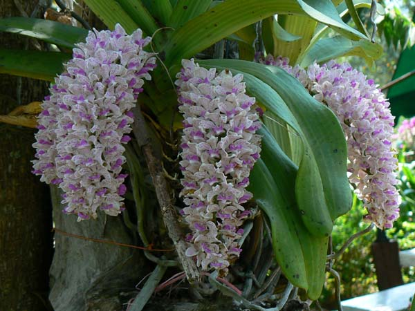
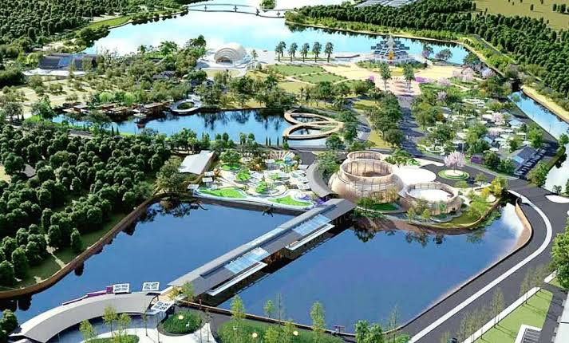
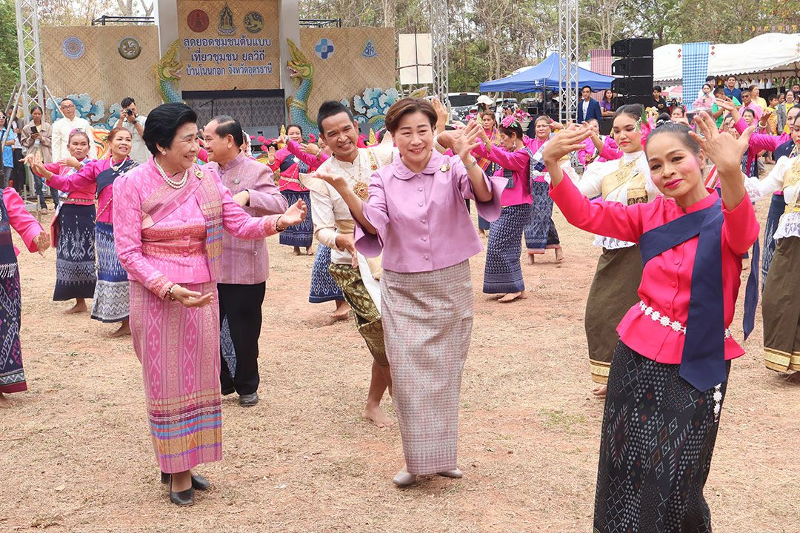

ไฮไลท์ภายในงาน
สัมผัสประสบการณ์ความอัศจรรย์ของพรรณไม้และเทคโนโลยีการเกษตรระดับโลก

โซนพรรณไม้หายาก
รวบรวมพืชพรรณจากทั่วทุกมุมโลกมาจัดแสดงในเรือนกระจกควบคุมอุณหภูมิอัจฉริยะ

นวัตกรรมหนองแด
การพลิกฟื้นพื้นที่ชุ่มน้ำสู่ต้นแบบการบริหารจัดการน้ำและการเกษตรที่ยั่งยืน

วัฒนธรรมและวิถีชุมชน
การแสดงศิลปวัฒนธรรมพื้นบ้านอีสาน ผสานเข้ากับนวัตกรรมระดับนานาชาติอย่างลงตัว